Start up Mp4DVD, and drag and drop the DVD onto it. I have chosen to back-up the TV Series "Gungrave Disc 2". So, when I put the disc in the DVD drive a DVD icon appears on my desktop labeled "GUNGRAVE_VOL2". I dragged that icon and dropped it on Mp4DVD (figure 1), which will bring me to a title selection table (Figure 22).
Figure 22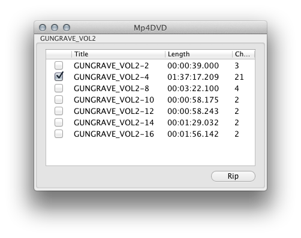
What we are looking at in Figure 22 are the different titles on the DVD. As one can tell the longest title has automatically been selected for us. The manufactures seems to have put all the episodes under one title this time, so I want the longest title. I will just leave it selected. Clicking "Rip" brings me to Figure 23.
Figure 23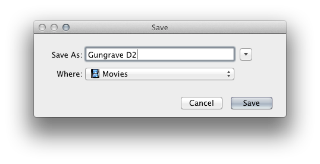
Here I choose a location and name for the new Mp4 file. I have my Mp4 files go to the "~/Movies" directory, and named this file "Gungrave D2". After the rip the file will be in /Users/<USERNAME>/Movies Folder, with the file name "Gungrave D2.mp4". Click the "Save" button and relax as Mp4DVD converts the DVD into a Mp4 file.
Here, the manufacture placed all the episodes under one title, so we will only have one Mp4 file output. To see what to do when there are individual titles for each episode see:
TV Series Back-up: Multiple Files
Figure 24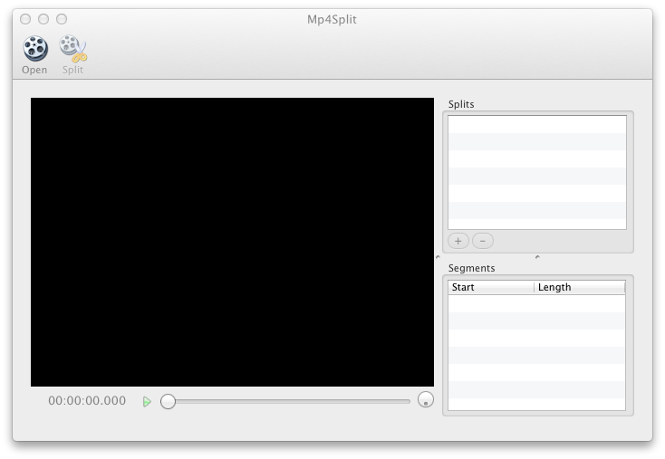
Click on the "Open" tool bar button and open the Mp4 file created by Mp4DVD. Mine is ~/Movies/Gungrave D2.mp4(Figure 25).
Figure 25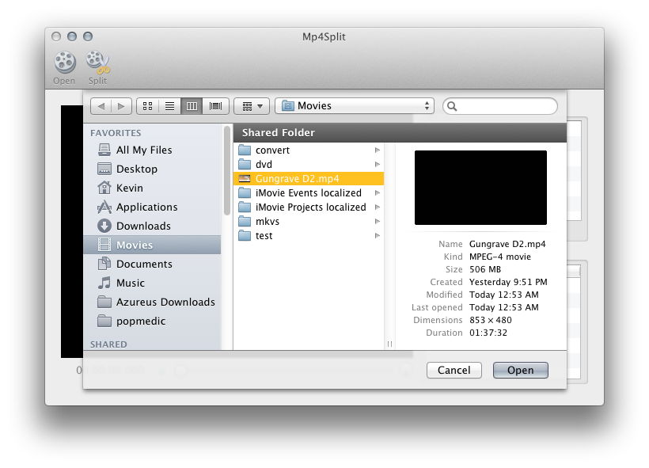
Using Mp4Split to scrub we have to find all the spots to split the video up into individual episodes. Almost always this is done by chapters, and lucky for us, Mp4DVD copies the chapters to the Mp4 file. We can scrub through using the slider, the quick keys, or jump chapters (Figure 26), and place splits where ever the new episodes start.
Figure 25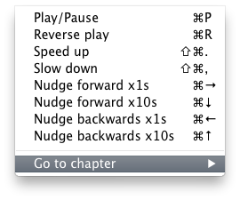
Mp4Split has a cool feature for helping here. Remember
Figure 22, we had a number of chapters for the title we chose, in my case it was 21. Since we have 21 chapters, and this DVD should have 4 episodes on it, I use ((Chapters)-1)/(episodes on disc)=(Chapters per episode). (21-1)/4=20/4=5, so every 5 chapters is a new episode. If I choose Splits -> Split Every -> Chapters... from the Main Menu, I get Figure 26.
Figure 26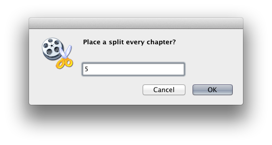
Here put the number of chapters there are for each episode, in my case 5. Makes adding scrubbing the video really easy.
Figure 27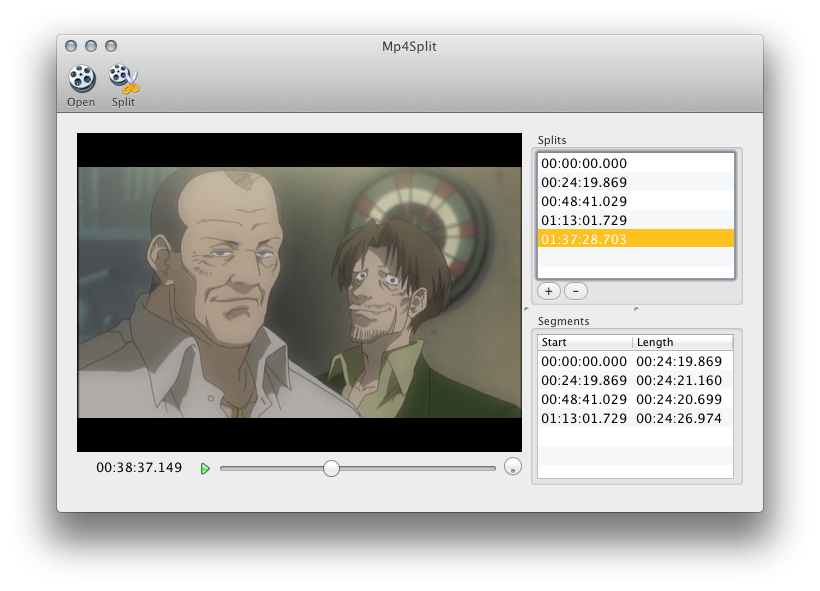
Once I have all my splits in place (Figure 27), Click the "Split" tool bar button. This will bring up Figure 28.
Figure 28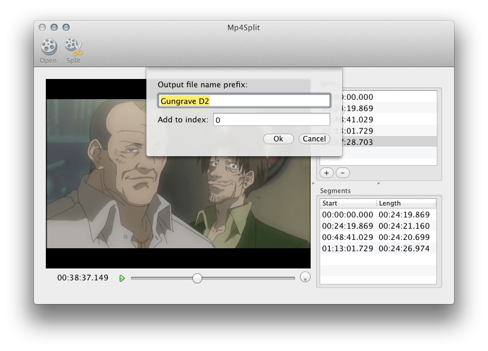
The "Output file name prefix" what will go at the beginning of every output file. "Add to index" is a number to add to the index for the output file. For example, if we use "Gungrave E" and 4, the 4 files out will be "Gungrave E5.mp4", "Gungrave E6.mp4", "Gungrave E7.mp4", and "Gungrave E9.mp4".
I am using the "E" after Gungrave because Mp4Autotag looks for the E in the file name to now that next number is the episode number. If this was a Series that had more then one season then I would use S1E1 for Season 1 Episode 1.
The reason we use 4 as an "Add to index" is because this is "Gungrave Disc 2" and "Gungrave Disc 1" had 4 episode on it. So I have to offset by the previous episodes. "Gungrave Disc 3" will be offset by 8.
Figure 28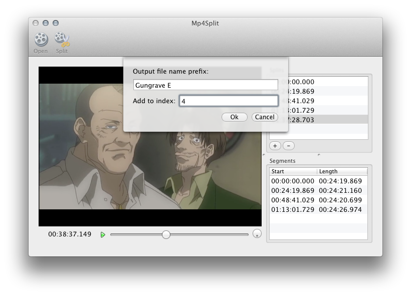
Once I have decided, click the "Ok" button bring up Figure 29.
Figure 29
The first progress indicator is the current segment getting split, the second progress indicator is all the splits. Click the "Split" button again to cancel if you want. The progress indicators will go away when you are done.
When done splitting open up Mp4Autotag (Figure 6).
When done I use finder to go to the Folder I output the split Mp4 files into. Unless someone changed my preferences it will be the same folder as the original Mp4 file. For me this is my ~/Movies folder.
Figure 30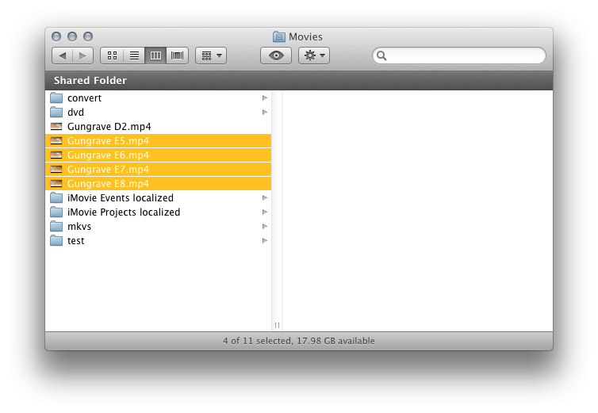
I select all the new Mp4Files in Finder, and drag and drop them on Mp4Autotag (Figure 6). This bring up Figure 31.
I select all of the episodes in Mp4Autotag (Figure 32) and click the "Automated"
tool bar button.
Mp4Autotag "Automated" button will go though and tag all the selected files with the "first" result of a search.
Figure 32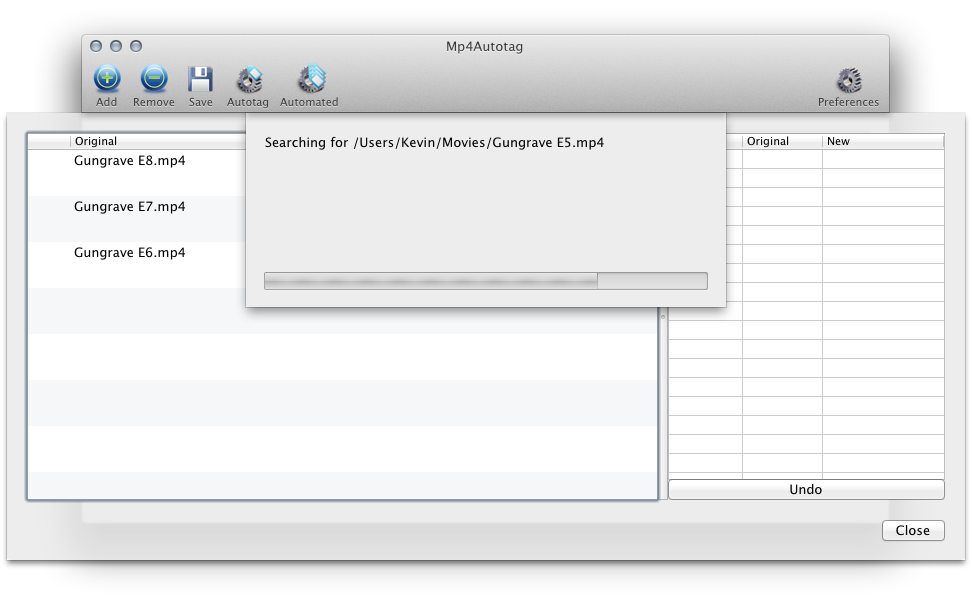
Mp4Autotag will use the file names and do a search on-line. Once it finds the best possible match, it uses the match to attach/modify the meta-data tags of the Mp4 file. It also attaches the movie poster, or an episode image. You can specify which in Mp4Autotag's Preferences. See the
Mp4Autotag page for more on using Mp4Autotag.
Figure 33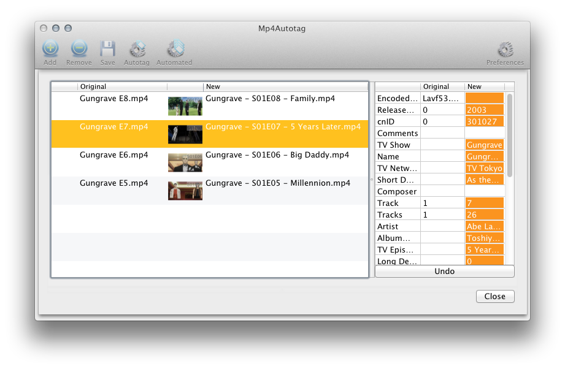
All of the changes are highlighted in orange. If I don't like the changes, I just click "Undo". Click "Close" when everything looks good, and check out the data added (Figure 34).
Add the Mp4 files to iTunes and Check out how cool they look!
Figure 35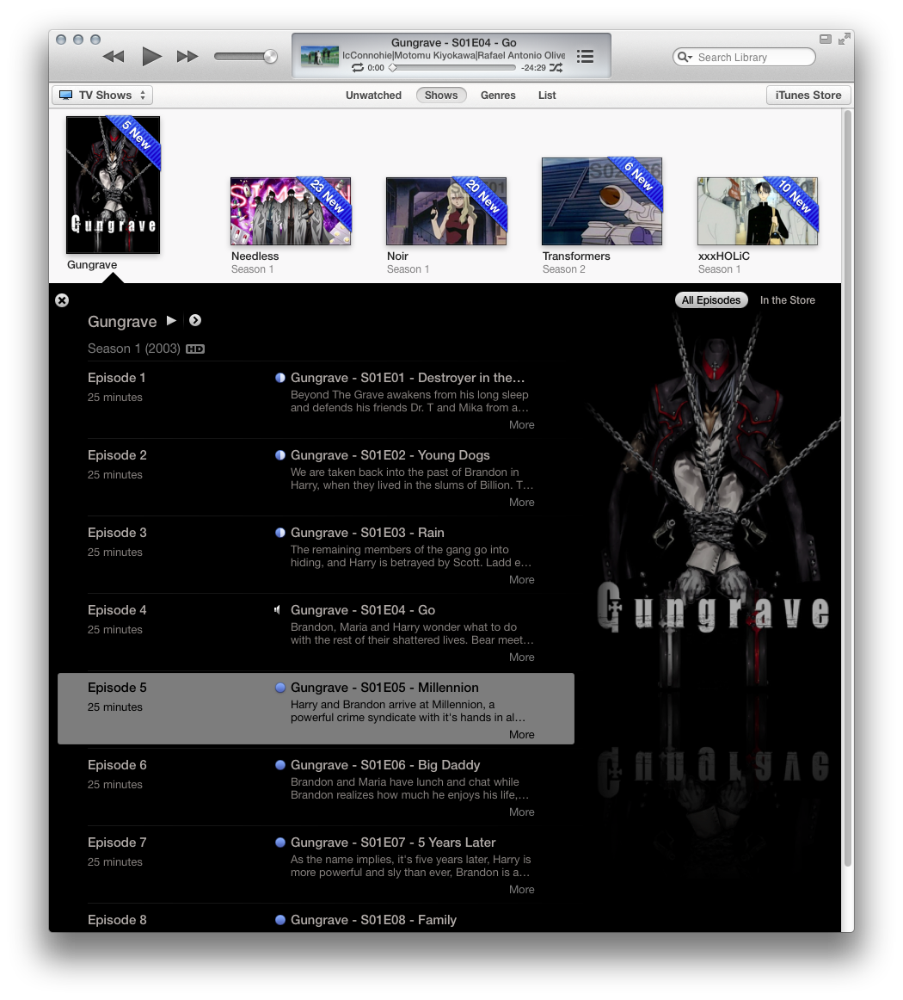